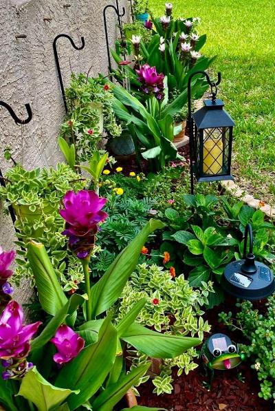

Olivia Johnson Life
Olivia is an extraordinary woman who has dedicated her life to her children and the well-being of her family. With a total of 215 kids, grandkids, great-grandkids, and even great-great-grandkids, Olivia's family is a vibrant and bustling community. Despite the challenges that come with such a large family, Olivia has always been a loving and supportive presence. Her heart of gold shines through in every interaction, and she has never been one to prioritize material wealth. Olivia's generosity knows no bounds, and she would gladly give you her last dollar if it meant helping someone in need. Her children and extended family are her world, and she cherishes every moment spent with them. Olivia's selflessness and unwavering dedication make her an inspiration to all who know her.
To Olivia, being a mother is not just a role; it is her entire life. She has never needed a babysitter because she thrives on being there for her children, day in and day out. Olivia's love for her children is immeasurable, and she has never hesitated to put their needs before her own. Her life has been shaped by the joy and fulfillment that comes from caring for her child, whom she holds dear to her heart. Olivia has never sought a life of her own, as her greatest happiness lies in nurturing and supporting her child. To her child, Olivia's love is boundless and unwavering. With gratitude and admiration, her child declares, "I love you, Mom." Olivia's selflessness and dedication serve as a testament to the incredible power of a mother's love.
